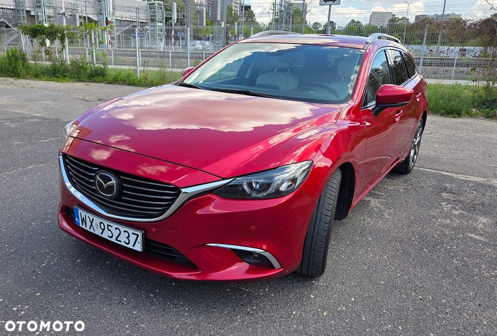
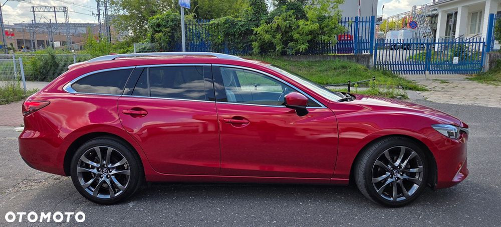
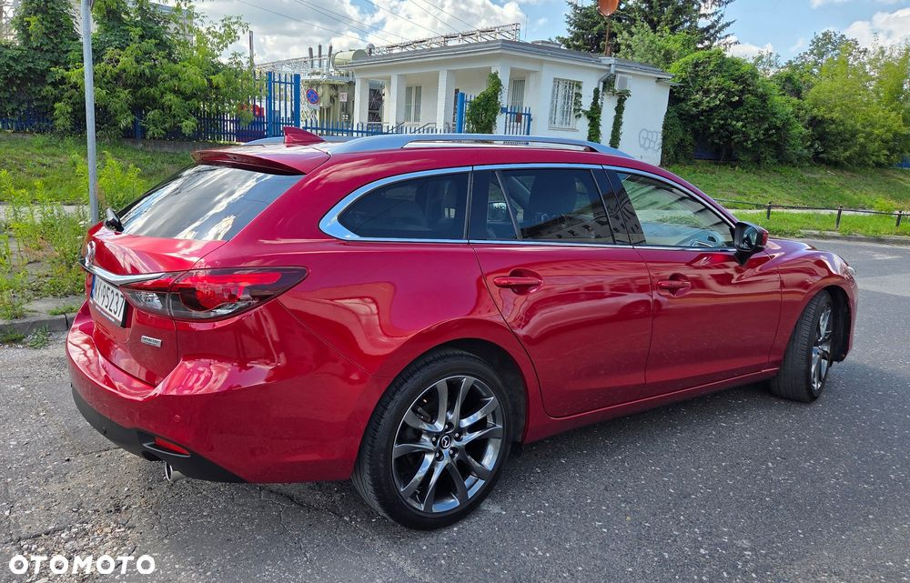
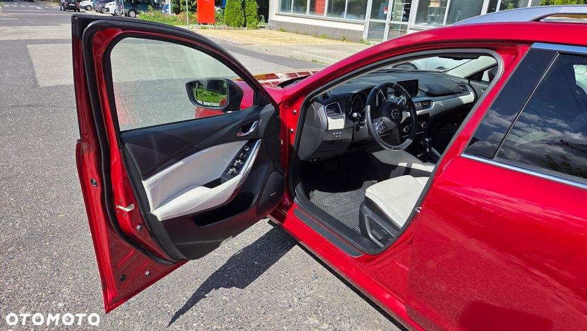
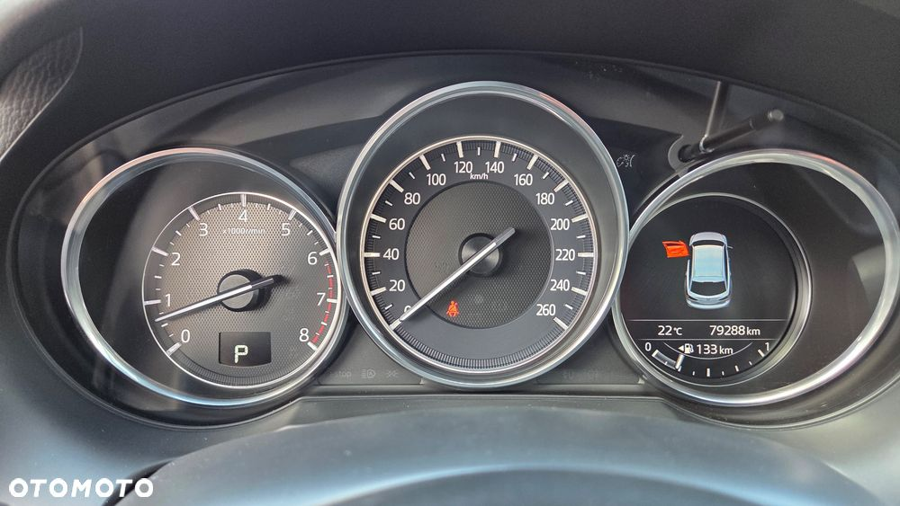
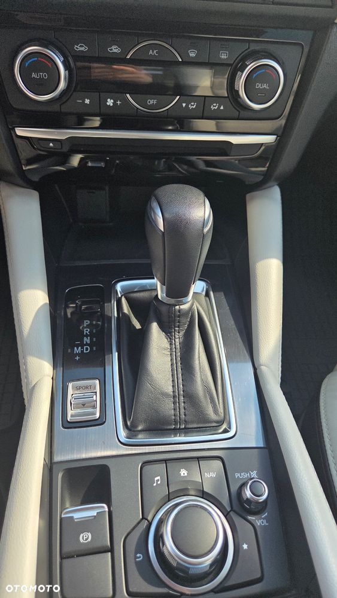
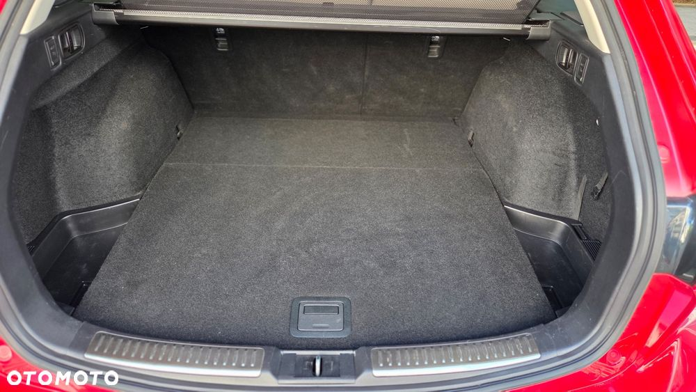
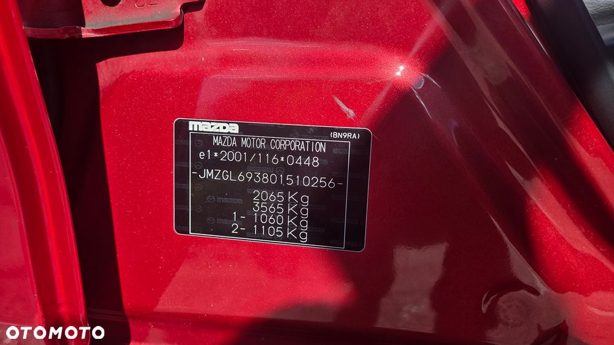
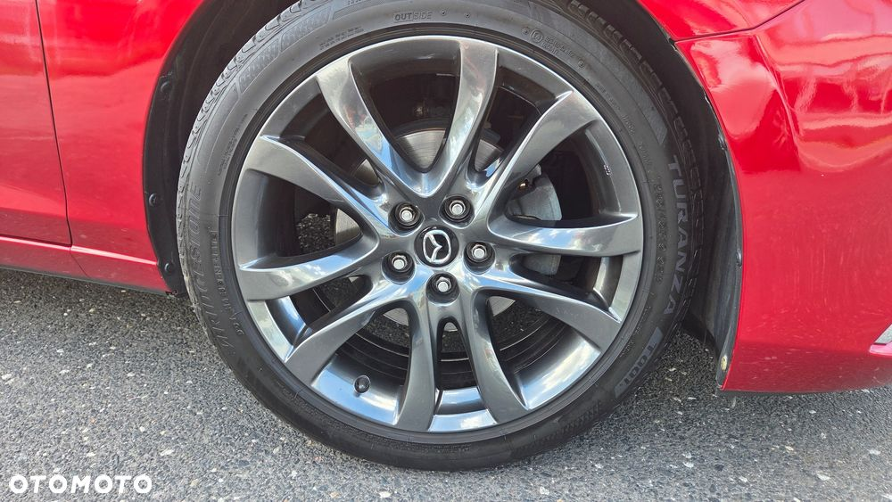
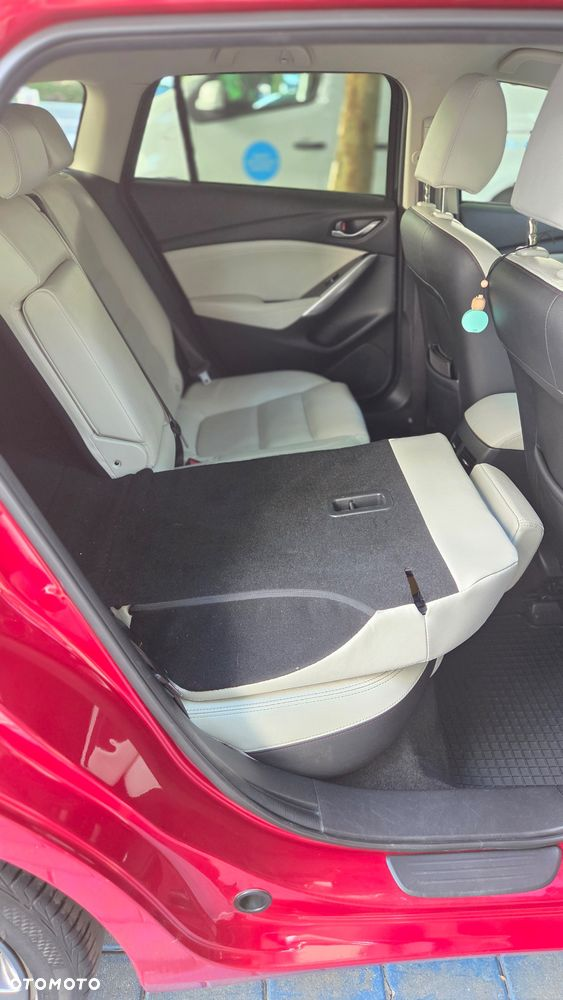

Szukasz przestronnego, bezpiecznego i komfortowego kombi, które zachwyci Cię na każdym kilometrze? Ta Mazda 6 to strzał w dziesiątkę!
Pierwsze wrażenie robi swoje – piękny, głęboki czerwony lakier metalik przyciąga spojrzenia i nadaje autu wyjątkowego charakteru.
Osiągi, które poczujesz – pod maską dynamiczny silnik benzynowy 2.5 o mocy aż 192 KM, w parze z płynną automatyczną skrzynią biegów. Jazda staje się przyjemnością, a nie obowiązkiem.
Wnętrze, w którym chce się podróżować – elegancka, jasna skórzana tapiceria i przestronna kabina zapewniają komfort zarówno w codziennych dojazdach, jak i na długich rodzinnych wyjazdach.
Bogate wyposażenie SkyPASSION – to najwyższa wersja wyposażenia w gamie Mazdy 6, gwarantująca nowoczesne technologie oraz najwyższy poziom bezpieczeństwa dla Ciebie i Twoich bliskich.
Sprawdzona historia – auto od pierwszego właściciela, zakupione i serwisowane w polskim salonie Mazdy. Pierwsza rejestracja: sierpień 2017.
To auto, które łączy styl, moc i komfort w jednym – idealne dla rodziny, dla której liczy się bezpieczeństwo i jakość podróżowania.
Felgi i opony zimowe - GRATIS
Garażowane na parkingu podziemnym
Wyposażenie:
* Automatyczna klimatyzacja - strefowa
* Elektryczne szyby przód i tył
* Skórzana, podgrzewana kierownica
* Elektrycznie regulowane, podgrzewane i składane lusterka
* Podgrzewane fotele przednie z pamięcią ustawień
* Adaptacyjny tempomat
* System nawigacji
* System bezkluczykowy
* Czujniki parkowania przód i tył + kamera cofania
* Systemy bezpieczeństwa: ABS, ESP, kontrola trakcji, asystent pasa ruchu, rozpoznawanie znaków, system pre-crash
* Bi-xenonowe reflektory skrętne, automatyczne światła drogowe
* Felgi aluminiowe 19" z oponami letnimi
* Felgi aluminiowe 17” z oponami zimowymi
* Wyświetlacz Head-up
* Radio, Bluetooth, USB, system nagłośnienia Bose
* Czujnik deszczu i zmierzchu
* Przyciemniane tylne szyby
* Automatyczny hamulec postojowy
* System Start-Stop
* Komplet poduszek powietrznych (przednie, boczne, kurtyny)
Gotowy do jazdy, idealny zarówno na dłuższe trasy, jak i do codziennego użytkowania.
Osoby zainteresowane zapraszam do kontaktu oraz na oględziny auta














